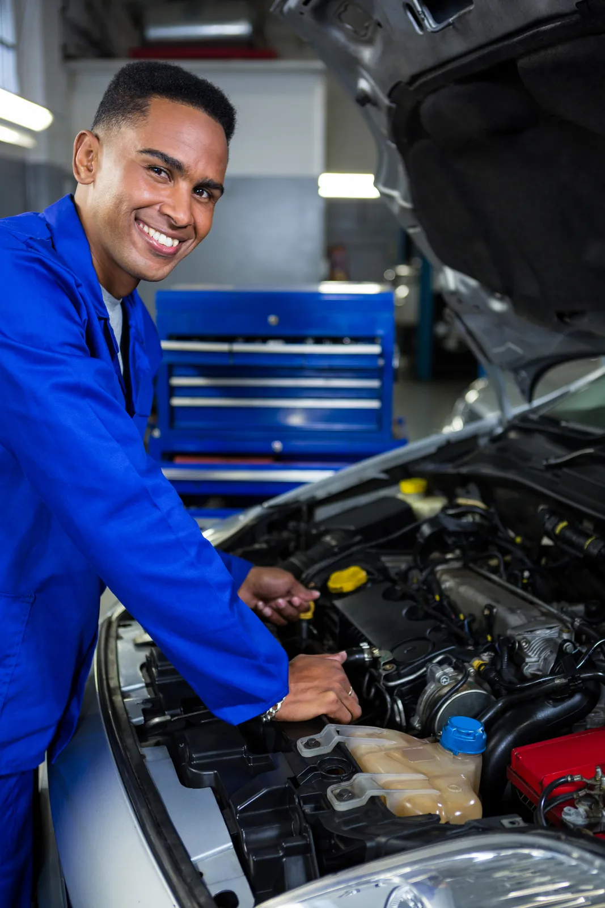
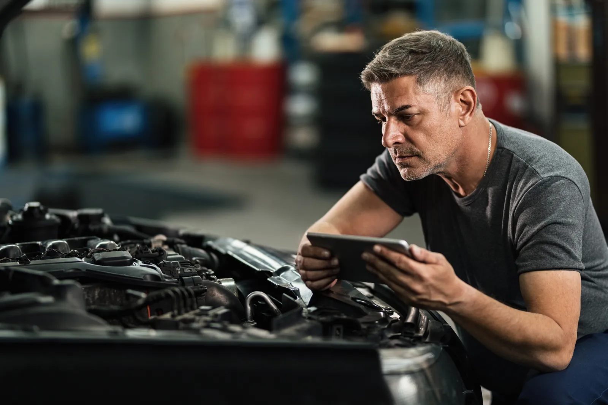
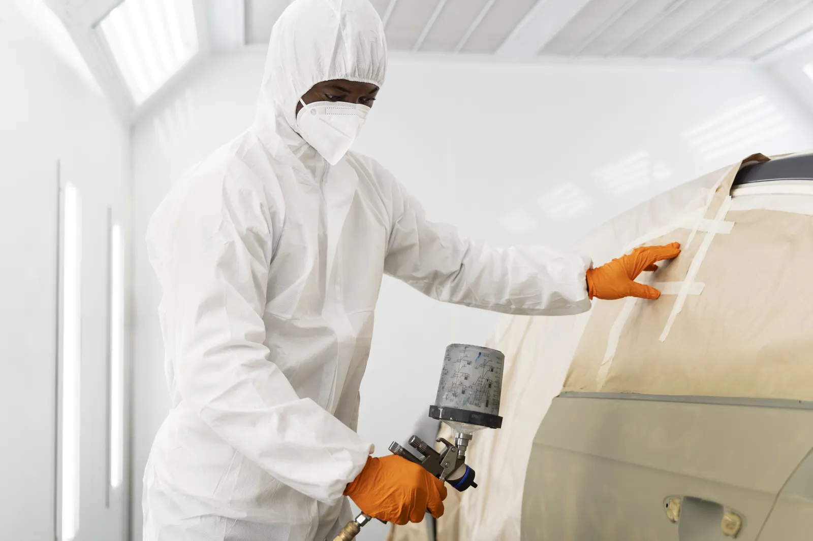

Mantenimiento preventivo: qué incluye y cada cuánto hacerlo
Un mantenimiento a tiempo cuesta mucho menos que una reparación. Esto es lo que revisamos y cómo saber cuándo le toca a tu auto.

5 señales de que tu caja automática necesita revisión
La caja automática avisa antes de fallar. Reconocer las señales a tiempo puede ahorrarte una reparación mayor.

Choque leve: qué hacer en los primeros 30 minutos
Un golpe pequeño también se complica si no tomas los datos correctos. Esta es la lista que te recomendamos tener a mano.